Probabilități
Probabilitatea realizării unor evenimente
Considerăm o experiență care poate avea rezultate variate, atunci evenimentul este unul dintre rezultatele care pot apărea.
Dacă ne punem întrebarea:
„Se va produce oare evenimentul  ?”
?”
Răspunsurile sunt Da sau Nu.
În cazul afirmativ, evenimentul se produce cu certitudine, iar acest eveniment se numește evenimentul sigur.
În cazul negativ, evenimentul nu se produce, iar acest eveniment se numește evenimentul imposibil.
Definiția EOD 7: Probabilitate. Probabilitatea unui eveniment
Probabilitatea este șansa realizării unui eveniment. Altfel spus, probabilitatea unui eveniment este raportul dintre numărul cazurilor favorabile în vederea realizării evenimentului și numărul cazurilor posibile în acea experiență.
Probabilitatea realizării evenimentului se notează 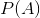:
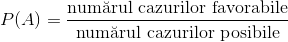 .
În subsecțiunea următoare, profesorii noștri experimentați de matematică ți-au pregătit câteva exerciții și probleme rezolvate complet, astfel încât tu să înțelegi cât mai bine noțiunile furnizate în acest ultim capitol al ghidului nostru.
Aplicații
Pentru a vedea cum se poate calcula probabilitatea realizării unui eveniment, urmărește cu mare atenție exercițiile rezolvate de mai jos.
Exercițiul 1
Într-o urnă sunt  bile albastre și 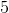 bile verzi. Care este probabilitatea ca extrăgând o bilă, aceasta să fie verde?
bile albastre și 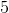 bile verzi. Care este probabilitatea ca extrăgând o bilă, aceasta să fie verde?
Soluție:
În pagina anterioară am văzut că probabilitatea se calculează astfel:
.
Trebuie să aflăm care este numărul cazurilor favorabile, respectiv numărul cazurilor posibile.
Dacă în urnă sunt bile albastre și bile verzi, în total, în urnă, sunt  bile.
bile.
Așadar, numărul cazurilor posibile a acestei experiențe este .
Deoarece în urnă sunt bile verzi și ni se spune că se extrage o bilă de culoare verde, atunci avem că numărul cazurilor favorabile este egal cu .
Atunci, probabilitatea extragerii din urnă a unei bile verzi este:
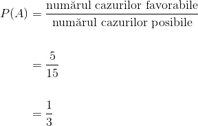
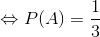 .
Exercițiul 2
Un băiat are o pungă cu bomboane. În pungă sunt de bomboane de mentă și bomboane de caramel. Întâlnindu-se cu prietenul său, îi întinde acestuia punga pentru a-și lua o bomboană. Care este probabilitatea ca prietenul să mănânce o bomboană cu caramel? Dar cu mentă?
Soluție:
În pungă sunt în total de bomboane ( de bomboane de mentă plus bomboane de caramel ), deci numărul cazurilor posibile este .
Vom nota probabilitatea ca prietenul să extragă și să mănânce o bomboană cu caramel cu 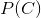, iar probabilitatea ca prietenul să extragă și să mănânce o bomboană cu mentă cu 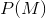.
Deoarece în pungă sunt bomboane cu caramel, înseamnă că numărul cazurilor favorabile în această experiență este egal cu .
Atunci, probabilitatea ca prietenul să extragă și să mănânce o bomboană cu caramel este:
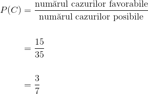
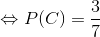 .
Deoarece în pungă sunt bomboane cu mentă, înseamnă că numărul cazurilor favorabile în această experiență este egal cu .
Atunci, probabilitatea ca prietenul să extragă și să mănânce o bomboană cu mentă este:
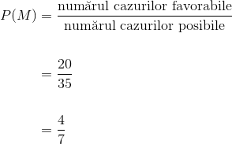
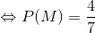 .
Observație:
Comparând cele două rezultate, observăm că, dacă numărul cazurilor evenimentelor dorite crește, crește și probabilitatea realizării lor.
Exercițiul 3
Andrei aruncă un zar. Care este probabilitatea ca pe fața de sus să fie numărul  ? Dar probabilitatea ca numărul obținut să fie număr natural?
? Dar probabilitatea ca numărul obținut să fie număr natural?
Soluție:
Zarul are  fețe numerotate de la
fețe numerotate de la  la , deci numărul cazurilor posibile este egal cu .
la , deci numărul cazurilor posibile este egal cu .
Deoarece numărul nu se găseste pe niciuna dintre fețele zarului, nu avem nici un caz favorabil; deci probabilitatea ca pe fața de sus să fie numărul este:
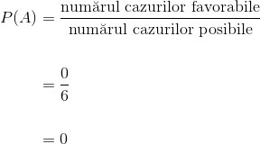
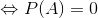.
În celălalt caz (numărul obținut să fie natural), avem același număr de cazuri posibile, adică , însă, deoarece toate numerele de pe fețele zarului sunt naturale, atunci numărul cazurilor favorabile este egal cu .
Deci, probabilitatea ca Andrei când aruncă zarul să obțină un număr natural este:
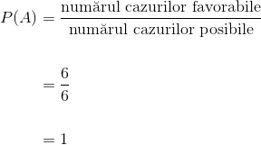
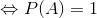.
Observație:
Vorbeam la începutul acestui ultim capitol despre evenimentul sigur și despre evenimentul imposibil. În exemplul anterior, evenimentul imposibil îl reprezenta cazul în care pe fața de sus să se obțină numărul și am văzut că are probabilitatea egală cu . Evenimentul sigur l-a reprezentat celălalt caz și anume numărul de pe fața de sus să fie natural și am obținut probabilitatea egală cu .
Sintetizând, obținem că, dacă  este un eveniment, atunci:
este un eveniment, atunci:
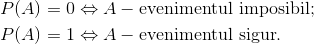